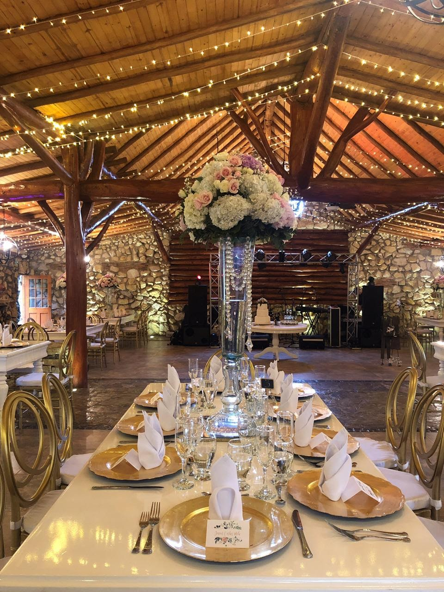

Decoration identify you!! All details are important.
Decoration is important to achieve a unique wedding adapted to the couple. We take care of every detail to create a calm, organized and detailed atmosphere, setting the place with natural flowers of the bride and groom's choice, tablecloths, napkins and plates base, according to the couple's profile.

We are specialized in both religious and civil weddings, we make the bride and groom, after our contact, not worry about the decoration and have their minds on something else. Our services range from the bridal bouquet, to the church and from the church to the farm.